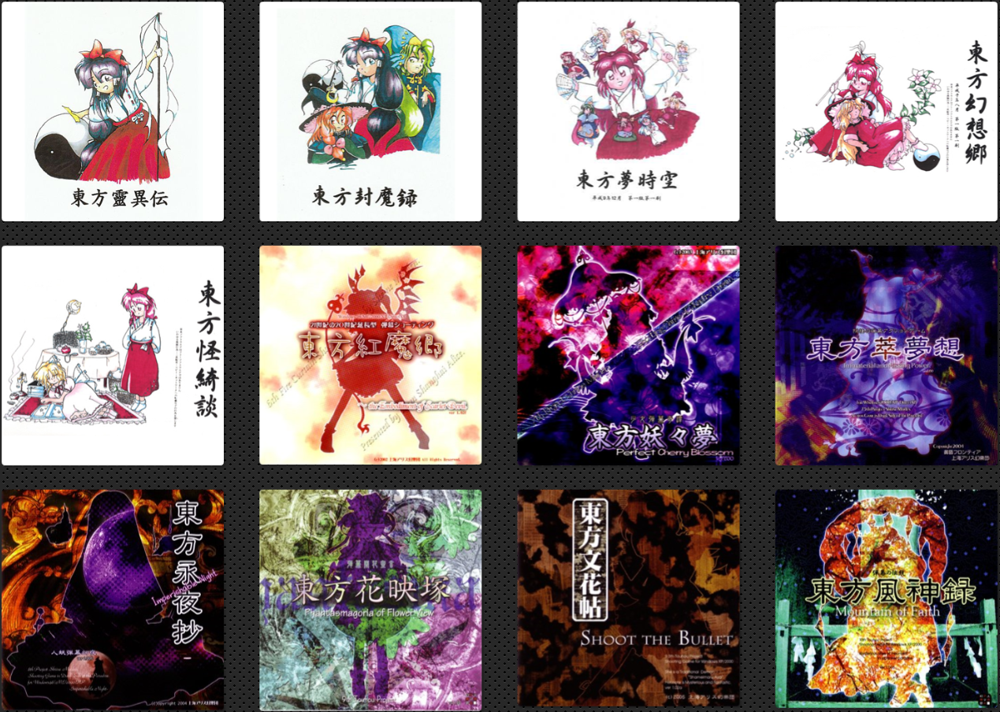
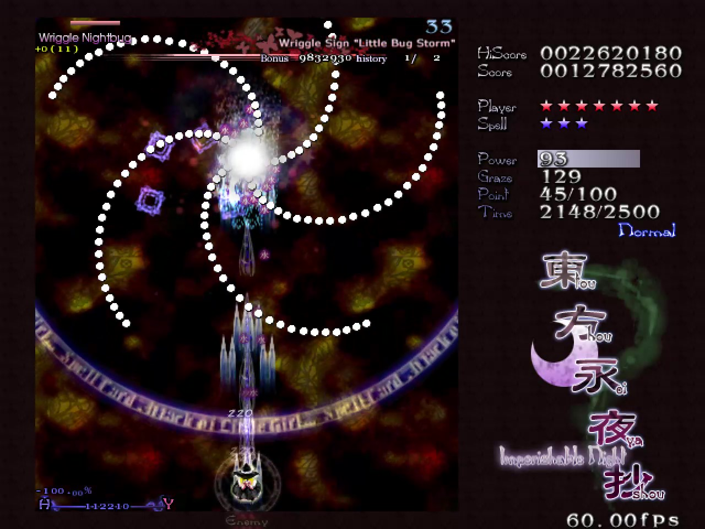
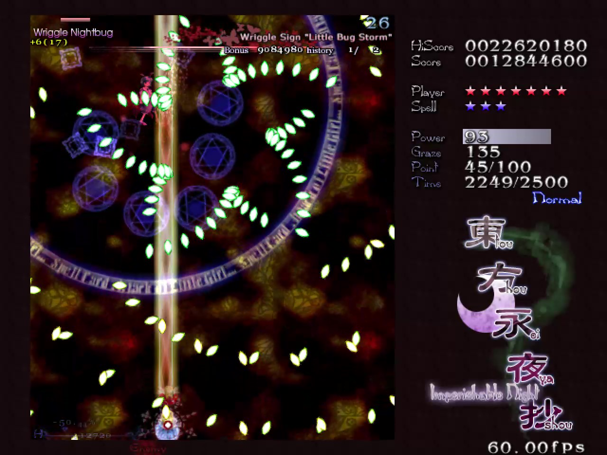
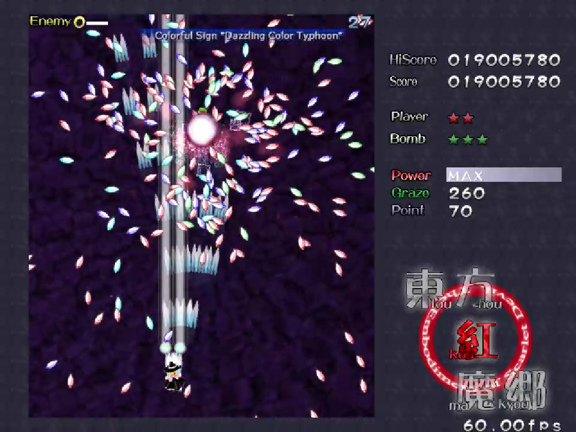
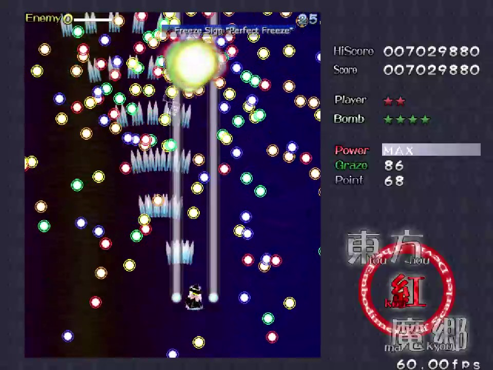
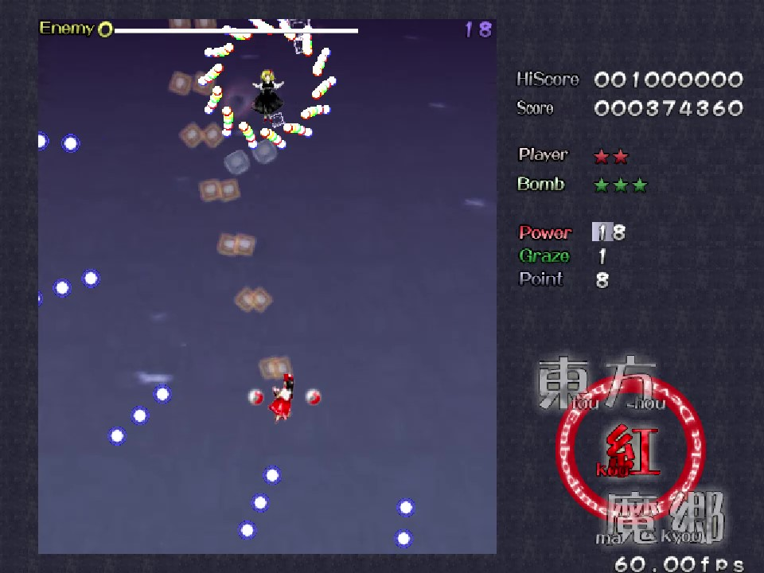

Touhou Project
Touhou Project — это известная серия японских игр в жанре данмаку-шутера (англ. bullet hell — «пулевой ад»), созданная разработчиком под псевдонимом ZUN. В этих играх нужно лавировать в непрерывном потоке вражеских выстрелов. Первая игра вышла ещё в 1996 году, и с тех пор серия выросла в огромную вселенную.

Первые 12 частей серии
Мир Генсокё
Действие всех игр разворачивается в Генсокё — волшебной стране, отделённой от нашего мира магическим барьером. Здесь бок о бок живут люди, феи, боги и существа из японского фольклора (ёкаи). Когда в Генсокё происходит очередной таинственный инцидент, героини отправляются на поиски виновников.

Инциденты
Почти каждая основная игра серии строится вокруг расследования очередного «инцидента» — масштабного сверхъестественного происшествия в Генсокё. Вот завязки самых известных из них:
- Embodiment of Scarlet Devil (Алая дымка). Посреди лета Генсокё накрывает густой алый туман, заслоняющий солнце. Рейму и Мариса отправляются на поиски источника и выходят на Особняк Алой Дьяволицы, хозяйка которого устроила всё это ради банальной прогулки днём.
- Perfect Cherry Blossom (Украденная весна). На дворе уже май, но в Генсокё всё ещё бушует зима и не наступает весна. Героини отправляются в Мир мёртвых, где выясняют, что призрачная принцесса Ююко Сайгёдзи собирает весеннюю энергию, чтобы распечатать древнюю демоническую сакуру.
- Imperishable Night (Вечная ночь). Накануне праздника любования луной настоящая луна исчезает, а на её месте появляется фальшивая, из-за чего ночь замирает и рассвет не наступает. Героини объединяются с ёкаями, чтобы найти похитителей до наступления утра.
Игровой процесс
Игрок управляет летающей героиней, которая пролетает сквозь замысловатые формации снарядов и одновременно атакует врагов. Несмотря на кажущуюся простоту, здесь есть свои тонкости:
Боссы уровня превращают обычный обстрел в настоящий танец пуль — некоторые их атаки больше похожи на геометрические фигуры, которые нужно разгадать на ходу.
|
 (TH8): Снаряды создают сложный спиральный узор. |
 (TH8): Пример узора из зелёных снарядов, образующих цветок |
Но чаще всего трудности вызывают именно их хаотичные атаки, где скорость и направление каждого снаряда нужно рассчитывать в реальном времени. В данмаку-шутерах всё решается за доли секунды.
|
 (TH6): Плотная стена пуль в атаке Хон Мэйлин |
 (TH6): Хаотичный поток разноцветных снарядов в атаке Чирно |
Базовое управление
| Клавиша | Действие |
|---|---|
| Стрелки | Движение персонажа |
| Z | Стрельба |
| Shift | Фокус (замедление движения для точного уклонения; в частях позже TH6 также подсвечивает хитбокс) |
| X | Использовать спелл-карту (очищает экран от пуль противника, кроме лазеров и других неуязвимых снарядов) |
Элементы интерфейса
Чтобы понять, что происходит на экране, давайте разберём основные элементы интерфейса на примере Embodiment of Scarlet Devil:
|
 1
2
3
4
5
6
7
8
|
Игровое поле:
Информационная панель (справа):
|
Подготовка к игре: сложность и спелл-карты
Перед началом прохождения в Embodiment of Scarlet Devil игроку предстоит выбрать уровень сложности, персонажа и тип его вооружения — от этого напрямую зависит ваша спелл-карта.
- Что такое спелл-карта? В лоре Генсокё это система правил дуэлей, позволяющая людям и ёкаям сражаться красиво и без смертельных исходов. В геймплее у этого понятия две стороны: у боссов так называются особо сложные именные узоры пуль с таймером, а у игрока — мощная «бомба» (активируется на X), которая уничтожает все пули на экране, даёт временную неуязвимость и наносит огромный урон.
- Выбор сложности: Доступны 4 основных режима — Easy, Normal, Hard и Lunatic. Важная особенность Embodiment of Scarlet Devil: на лёгком уровне (Easy) игра заканчивается на 5-м уровне, поэтому увидеть концовку и сразиться с Ремилией Скарлет можно только начиная с Normal.
| Персонаж и тип | Обычная атака | Спелл-карта |
|---|---|---|
| Рейму A (Spirit Amulet) | Самонаводящиеся амулеты (идеально для новичков) | Fantasy Seal — взрывающиеся самонаводящиеся сферы |
| Рейму B (Dream Amulet) | Узкий поток скоростных игл (высокий урон по боссам) | Evil Sealing Circle — расширение мощного барьера вокруг себя |
| Мариса A (Magic Amulet) | Ускоряющиеся магические ракеты | Stardust Reverie — веер из множества звёздных снарядов |
| Мариса B (Love Amulet) | Пронзающий синий лазер | Master Spark — гигантский луч света, сметающий всё на пути |
Персонажи
Нажмите на имя персонажа, чтобы открыть страницу с подробным описанием:
Главные Героини
- Рейму Хакурей — жрица храма Хакурей.
- Мариса Кирисаме — обычная волшебница.
Другие персонажи
- Чирно — ледяная фея, живущая около Туманного Озера.
- Сёстры Скарлет — обитатели Особняка Алой Дьяволицы.
- Сакуя Идзаёй — главная горничная Особняка Алой Дьяволицы.
Почему серия популярна
Игры славятся сочетанием хардкорного, но честного геймплея, уникальной атмосферой японской мифологии и запоминающейся музыкой, которую автор серии пишет самостоятельно, и у каждой героини есть своя узнаваемая тема.
Одна из самых известных — Beloved Tomboyish Girl, звучащая в битве с Чирно. (TH6)
Несколько знаковых игр серии
| Год | Название | Чем известна |
|---|---|---|
| 2002 | Embodiment of Scarlet Devil | Первая часть для Windows, задавшая современный канон серии и подарившая фанатам сестёр Скарлет и Сакую. |
| 2003 | Perfect Cherry Blossom | Эталонный классический Shoot ’em up серии с зимне-весенней атмосферой, введший механику сверхъестественных барьеров и босса Фантазм-уровня (Юкари Якумо). |
| 2004 | Imperishable Night | Самая дружелюбная к новичкам часть с парными командами (человек и ёкай) и таймером ночного времени вместо привычного счёта этапов. |
| 2007 | Mountain of Faith | «Мягкий перезапуск» серии на обновлённом движке, открывший новую сюжетную арку с богами горы Ёкаев и сёстрами Комейдзи в следующих частях. |
| 2008 | Subterranean Animism | Одна из самых хардкорных частей серии, действие которой разворачивается в глубинах подземелья, и дебют Сатори и Койси Комейдзи. |
| 2015 | Legacy of Lunatic Kingdom | Знаменита экстремальной сложностью и революционным режимом Pointdevice с чекпоинтами, позволяющим переигрывать отдельные паттерны без потери жизней. |
Это лишь несколько наиболее известных частей — всего в официальной серии насчитывается более 30 игр, включая файтинги, фотографические спин-оффы и аркады.
Интересные факты
- Истоки на PC-98. Первые пять игр серии вышли в 1996–1998 годах для японских компьютеров NEC PC-98. В то время создатель серии ZUN состоял в студенческом кружке Amusement Makers. События этих пяти игр часто не считают частью основного современного канона, хотя часть персонажей и мотивов из них всё же перекочевала в дальнейшую историю.
- Рождение Team Shanghai Alice. После окончания университета и ухода из Amusement Makers ZUN (Дзюнъя Ота) основал независимый додзин-кружок Team Shanghai Alice. По сей день он остаётся его единственным официальным участником. Название кружка выступает скорее как творческий псевдоним автора: это творческое объединение без статуса юридического лица.
- Первая игра — не данмаку. Touhou Reiiden ~ The Highly Responsive to Prayers (ноябрь 1996) на самом деле была арканоидом: персонаж отбивал мяч и разбивал блоки. Жанр «данмаку» появился только во второй игре серии The Story of Eastern Wonderland (август 1997), и затем с переходом на Windows в 2002 году она обрела привычный вид.
- Вырезанная героиня. В Embodiment of Scarlet Devil должна была появиться третья играбельная героиня — Рин Сацуки (冴月麟, Rin Satsuki). Её вырезали из-за нехватки времени, но в исполняемом файле игры остался след: хекс-код
8D E1 8C 8E 20 97 D9(кодировка Shift-JIS) рядом с кодом Рейму и Марисы, а также два типа атак — «Цветок» (花) и «Ветер» (風). Сейчас Рин — один из самых известных «призраков» в истории серии.
Фанатский облик Рин Сацуки, вдохновлённый силуэтом с постера Team Shanghai Alice для Comic Market 62 (2002). Согласно замечанию ZUN, его собственный рисунок, вероятно, был сделан как импровизация или «талисман кружка», а не как официальный дизайн персонажа.
Фанатское творчество и мемы
Вокруг игры сформировалось огромное сообщество, которое создаёт фан-арты, музыкальные ремиксы и забавные анимации. Перейти в галерею фан-артов и гифок →